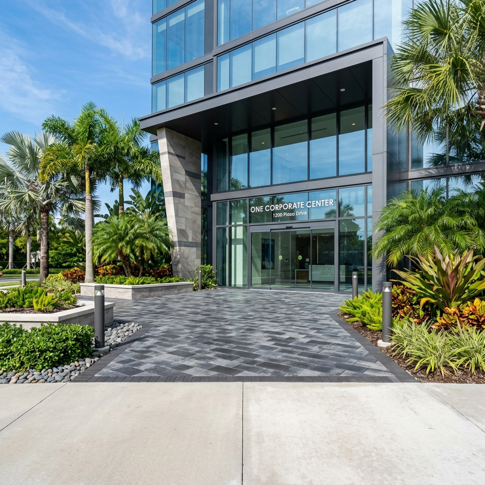

Exterior-rated tile
Slip characteristics, exposure rating and the complete setting assembly matter more outdoors than appearance alone.

Livane Renovation remodels selected patios and exterior living surfaces across South Florida, planning the finish system around substrate condition, exposure, transitions and property access.
Livane Renovation remodels patios and exterior amenity areas with South Florida weather, drainage, traffic, material selection, and maintenance requirements in mind.
We review existing conditions, dimensions, access, adjacent finishes, material requirements, and scheduling constraints before defining the scope. That keeps the proposal practical and helps homeowners, property owners, managers, and builders compare the work on clear terms.
Existing-surface review, selective removal, paver or tile installation coordination, leveling and transitions, surface preparation, sealing, edge details, and connection to adjacent exterior finishes.
Service guide
Livane Renovation remodels selected patios and exterior living surfaces across South Florida, planning the finish system around substrate condition, exposure, transitions and property access. Patio remodeling can include removal of failed finishes, surface preparation, tile or paver-related finish work, transition detailing and coordination with adjoining exterior elements. Exterior assemblies face rain, heat, movement and persistent moisture, so a finish chosen for an indoor room should not automatically be treated as suitable outdoors.
Review exposure, drainage observations, substrate, edges and access.
Document finishes to remain and define removal limits.
Remove incompatible or failed materials where included.
Prepare the substrate and address approved localized conditions.
Confirm exterior-suitable finish and installation materials.
Set the layout around boundaries, transitions and visible cuts.
Complete joints, edges and adjoining finish interfaces.
Clean, inspect and document maintenance considerations.
Slip characteristics, exposure rating and the complete setting assembly matter more outdoors than appearance alone.
Condition, settlement, joints and edge restraint should be reviewed before deciding between localized work and broader renovation.
Stone type, porosity, finish and weather exposure influence installation and maintenance expectations.
Door thresholds, pool-adjacent edges and adjoining hardscape require deliberate detailing.
Localized repair can suit isolated, understood damage. Repeated failures, widespread debonding or an unsuitable assembly can justify broader removal and replacement.
Exterior finishes need appropriate exposure and slip characteristics and must be paired with an exterior-suitable installation assembly.
Sealing may help manage absorption or maintenance for compatible materials, but it does not stabilize loose finishes or correct drainage and substrate problems.
No responsible scope can be priced from the service name alone. The principal project variables are:
Sometimes, after confirming bond, plane, height, drainage implications and compatibility. Concealing a failing layer is not a durable solution.
Area, removal, preparation, weather, cure requirements and access all affect duration.
Some phases require controlled, suitably dry conditions. Weather allowances should be included in exterior scheduling.
Selected pool-adjacent surface scopes can be reviewed, with edge, exposure and slip considerations defined before work.
No. Stone properties, exposure, maintenance and the supporting assembly must match the application.
Send wide and close-up photos, dimensions, location, drainage observations, existing material and desired finish.
Share clear photos, approximate square footage, the property location, current condition and desired result. That information helps separate a preliminary conversation from work that needs a site review.
Send photos, approximate square footage, the property location, and your target timing. We will advise whether the next step is a preliminary review or a South Florida site visit.
Request a Quote